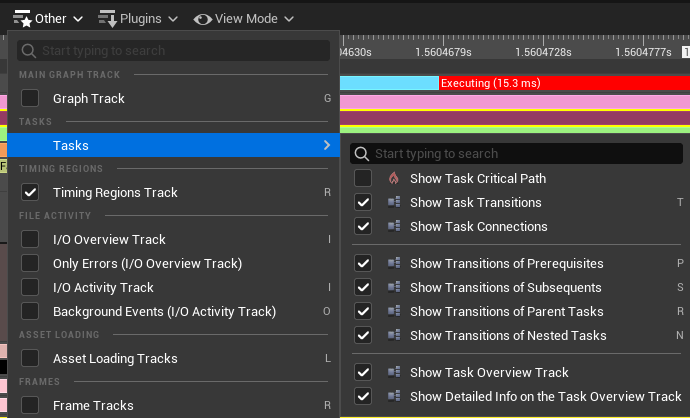
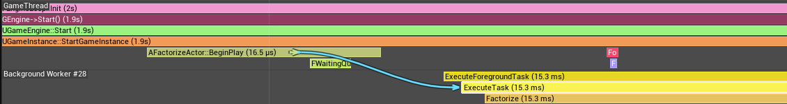
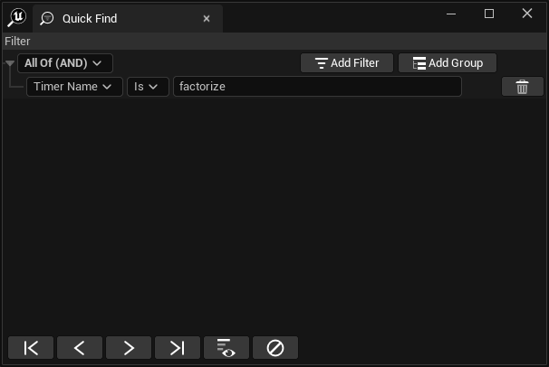
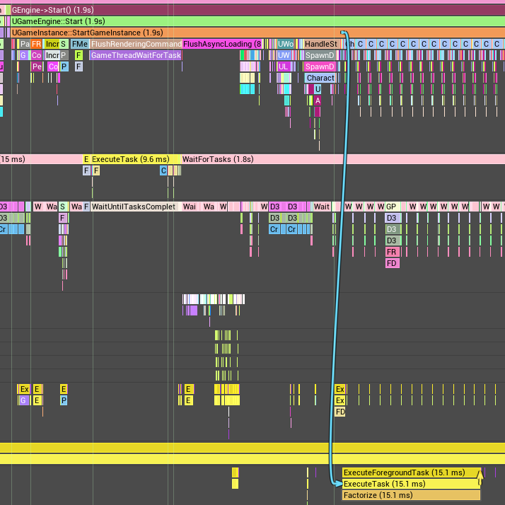
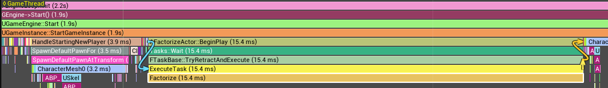
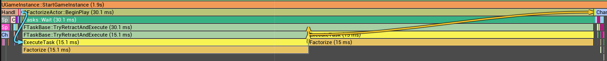
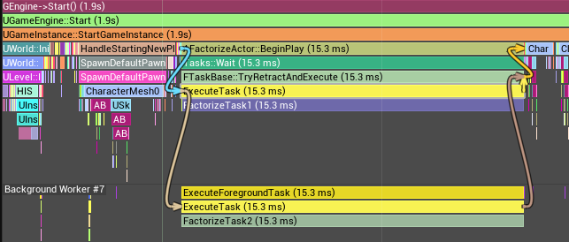
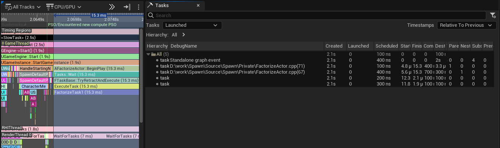

Optimizing Unreal Engine : Part 4
Adding Task Data to Traces
In Part 3 we used Unreal Insights to sample performance data and display it like this:

By default there is no simple way to connect the timing events on the Game Thread track, which create tasks, with the
timing events on the other tracks which execute those tasks. We can see from the picture that the
Foreground Worker #0 track has timing events from ExecuteForegroundTask() but that is all.
Unreal Tasks
Unreal divides work to be executed into tasks. Tasks are added to a task graph and then the scheduler allocates tasks to threads for execution. The Foreground Worker and Background Worker threads show in the Timing panel can be allocated tasks from the pool. The main game thread can also be allocated tasks.
Tasks have a priority, the scheduler will try to execute higher priorty task first.
Tasks can have prerequisites which are other tasks which must be completed before a task is started. Tasks can have child tasks. One task might divide its work into a number of other tasks which might need to be executed sequentially one after another, or might be executed all at the same time in parallel. Or there might be a mixture of both.
Enabling Task tracing
There are two ways to do this. It can be configured using the editor menus, in which case it works when running the program to be traced in the same process as the editor, or by specifying command line options, which works with standalone programs.
Enabling Task tracing in the Editor
From the Trace menu on the toolbar at the bottom of the editor window choose Channels and the tick the "Task" channel like this:

This will make tracing collect task data but will only work when tracing in the same process as the editor, such as when the program is running in the "New Editor Window (PIE)" mode, but it won't work running in Standalone mode (at least it does not work in Unreal 5.4.2).
Enabling Task tracing from the Command Line
Here we want to run the project executable from the command line. The executables are found in the Binaries\Win64 directory of the project. The are named as follows:
| Configuration | Name | For Spawn Project |
|---|---|---|
| Debug | [ProjectName]-Win64-Debug.exe | Spawn-Win64-Debug.exe |
| Debug Game | [ProjectName]-Win64-DebugGame.exe | Spawn-Win64-DebugGame.exe |
| Shipping | [ProjectName]-Win64-Shipping.exe | Spawn-Win64-Shipping.exe |
| Development | [ProjectName].exe | Spawn.exe |
We want to launch the program on the command line with the same paramaters used when running in Standalone mode from the editor. We can get these parameters from the Sessions tab of the Unreal Insights window when we have opened any Standalone session:

With these parameters we can assemble the command line and add "-trace=default,task" at the end of it to enable task tracing. The full command line is:
Binaries\Win64\Spawn.exe /Game/ThirdPerson/Maps/ThirdPersonMap -game -Multiprocess GameUserSettingsINI=PIEGameUserSettings0 -MultiprocessSaveConfig -forcepassthrough -messaging -SessionName="Play in Standalone Game" -windowed -WinX=-2036 -WinY=117 SAVEWINPOS=1 -ResX=1920 -ResY=1080 -trace=default,task
This command line only does tracing if the Session Browser is already running, so run it first and then run the command line.
Checking Task Tracing is working
A quick way to checking that task tracing did work is to open the trace file in Unreal Insights and right click the "Other" menu in the Timing view - you should see a Tasks submenu like this:

What's New in the task view
With task tracing enabled a number of new features appear in the Unreal Insights UI:
Task Info on tooltips
When mousing over a timing event which is waiting on a task we see that in the tooltip:

There might be many tasks - in the simple text project with ~1500 actors multiple tasks are generated for each actor, so there are thousands of tasks and we see tooltips like this:

If the timing event is executing a task we see a tooltip identifying which task it is:

The Task Overview track and task connections
To show this more clearly we create a new example class derived from AActor and place one instance of this class on the map. This actor has this code in the .cpp file:
namespace
{
void Factorize(unsigned long long n) {
TRACE_CPUPROFILER_EVENT_SCOPE(Factorize);
for (unsigned long long i = 1; i * i <= n; ++i) {
if (n % i == 0) {
UE_LOG(LogTemp, Warning, TEXT("A factor of %ld is %ld"), n, i);
}
}
}
}
The Factorize() function serves as something which takes some time to process so will be easier to see in the Timing view.
In addition we have this code in the BeginPlay() function of the actor:
void AFactorizeActor::BeginPlay()
{
TRACE_CPUPROFILER_EVENT_SCOPE(AFactorizeActor::BeginPlay);
Super::BeginPlay();
unsigned long long LargeNumber = 99999993700377;
UE::Tasks::Launch(
UE_SOURCE_LOCATION,
[LargeNumber] { Factorize(LargeNumber); }
);
}
The UE::Tasks::Launch() function creates a task and adds it to the task graph scheduled to run asynchronously. In thie example we don't do anything
with the return value from the function; we don't wait for it to complete, we just know it will run sometime in the future.
If we have the Task display options enabled like this:

then we see a connection in the Timing view show us that the BeginPlay() method launched an asynchronous task:

Note that if you know the name of the timing event you can search the Timing view by right-clicking and filling the Quick Find dialog with the name of the event, like this:

The Find First button in the bottom left corner will then take you to the event.
In the above code we added a timing event TRACE_CPUPROFILER_EVENT_SCOPE(AFactorizeActor::BeginPlay) to make it clear
that our BeginPlay() method launched the asynchronous task. Without this the BeginPlay() method would not appear
in the Timing view (because only event scopes appear in the view, not all functions) and the connection would
start in the UGameInstance::StartGameInstance() event like this:

If we change the code which calls the Factorize() method to wait until it has completed, in addition to
seeing a connection into the start of the task we see one at the end of the task as well. The code
now stores the return value from the Launch() function and calls Wait() on it:
void AFactorizeActor::BeginPlay()
{
TRACE_CPUPROFILER_EVENT_SCOPE(AFactorizeActor::BeginPlay);
Super::BeginPlay();
unsigned long long LargeNumber = 99999993700377;
UE::Tasks::FTask Task = UE::Tasks::Launch(
UE_SOURCE_LOCATION,
[LargeNumber] { Factorize(LargeNumber); }
);
Task.Wait();
}
And on the Timing view it looks like this:

If we change the code to launch two tasks and make one a prerequsite of the other, so that task 1 must complete before task 2, the code is:
void AFactorizeActor::BeginPlay()
{
TRACE_CPUPROFILER_EVENT_SCOPE(AFactorizeActor::BeginPlay);
Super::BeginPlay();
unsigned long long LargeNumber = 99999993700377;
UE::Tasks::FTask Task1 = UE::Tasks::Launch(
UE_SOURCE_LOCATION,
[LargeNumber] { Factorize(LargeNumber); }
);
UE::Tasks::FTask Task2 = UE::Tasks::Launch(
UE_SOURCE_LOCATION,
[LargeNumber] { Factorize(LargeNumber); },
Task1 // Prerequisite
);
Task2.Wait();
}
And the Timing view shows the dependency like this:

As a final example this code shows a nested task, where Task 2 is nested within Task 1, so Task 1 will be completed only when the code in Task 1 is complete and Task 2 is also complete:
void AFactorizeActor::BeginPlay()
{
TRACE_CPUPROFILER_EVENT_SCOPE(AFactorizeActor::BeginPlay);
Super::BeginPlay();
unsigned long long LargeNumber = 99999993700377;
UE::Tasks::FTask Task1 = UE::Tasks::Launch(
UE_SOURCE_LOCATION,
[LargeNumber]
{
UE::Tasks::FTask Task2 = UE::Tasks::Launch(
UE_SOURCE_LOCATION,
[LargeNumber] { FactorizeTask2(LargeNumber); }
);
UE::Tasks::AddNested(Task2);
FactorizeTask1(LargeNumber);
}
);
Task1.Wait();
}
This code produces these connections:

By random chance the Task 1 has executed on the game thread which launched it. This example also
uses two copied of the Factorize() function which have different values passed to the TRACE_CPUPROFILER_EVENT_SCOPE
macro just to make the example clearer.
The Tasks View
When viewing a trace with task data if you select a task in the Timing view and then press Enter to select it, a table of task information is displayed in the Tasks view like this:

In this view you can see various data about tasks and filter the view to show active tasks, tasked launched by the selected task and several other filters.
Reference
Feedback
Please leave any feedback about this article here